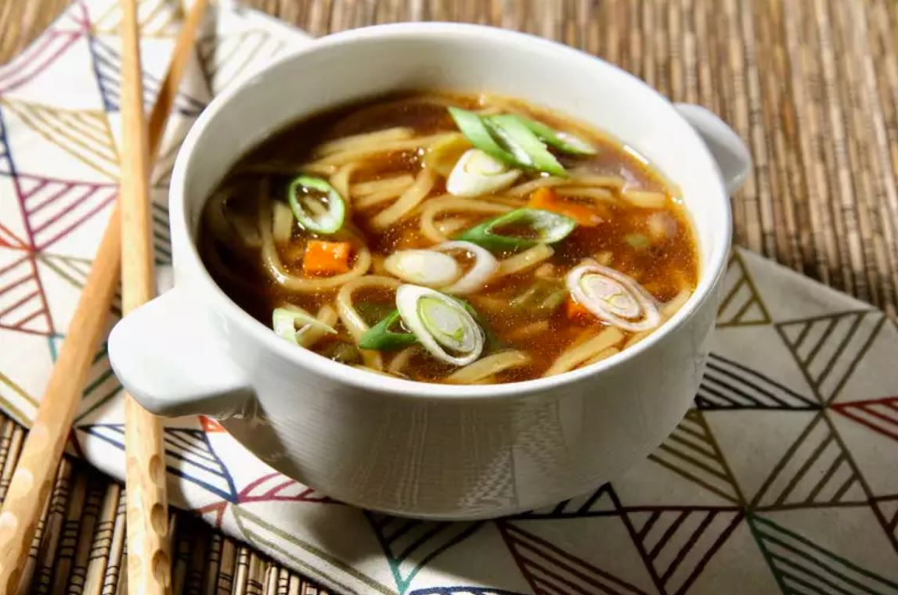

Ramen Noodle Soup
Return to main page

Description
Some noodles in any kind of broth. Make the broth based soup, then boil noodles and strain them. Then put the cooked noodles in the soup. Add toppings like green onions and other condements to add flavor.
Ingredients
- 3 1/2 cups vegtable broth
- 3.5 ounce package ramen noodles
- 2 teaspoons soy sauce
- 1/2 teaspoon chili oil
- 1/2 teaspoon minced fresh ginger root
- 1 teaspoon seasame oil
- 2 green onions, sliced
Steps
- In a medium saucepan combine broth and noodles. Cover and bring to a boil over high heat; stir to break up noodles. Reduce heat to medium and add soy sauce, chili oil and ginger. Simmer, uncovered, for 10 minutes. Stir in sesame oil and garnish with green onions.